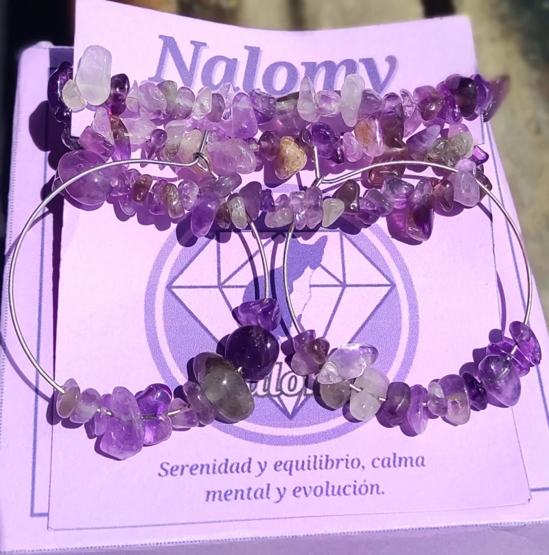
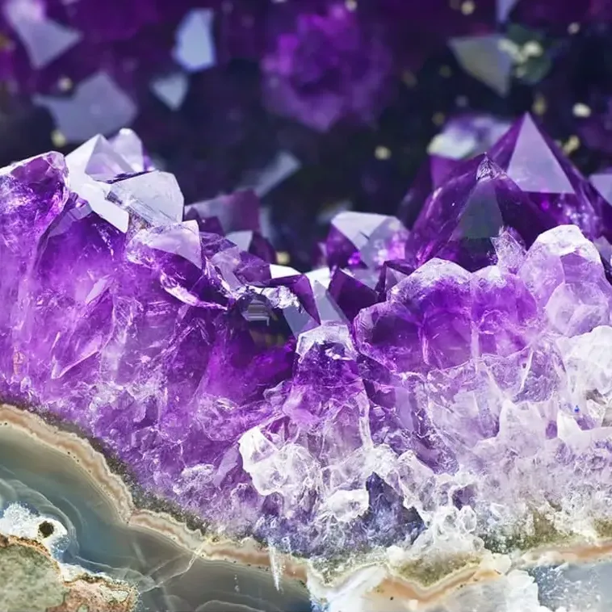
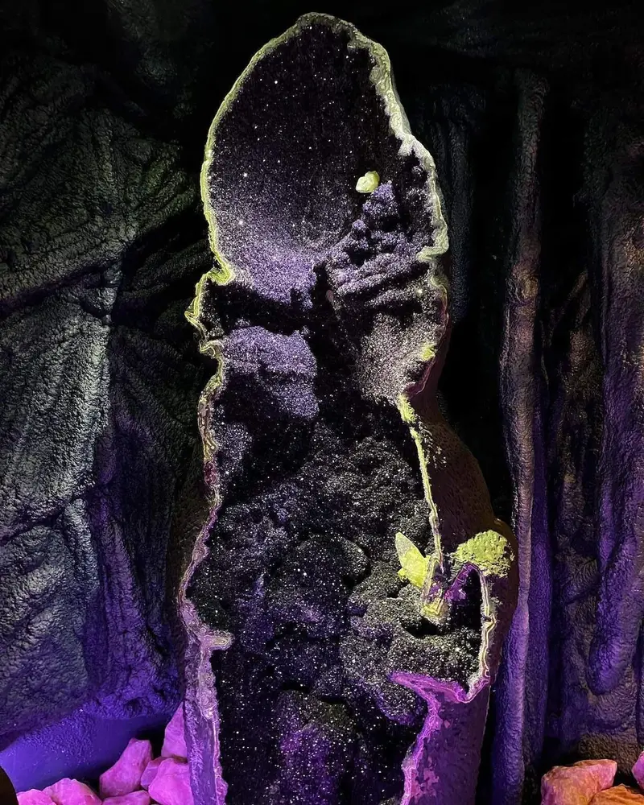
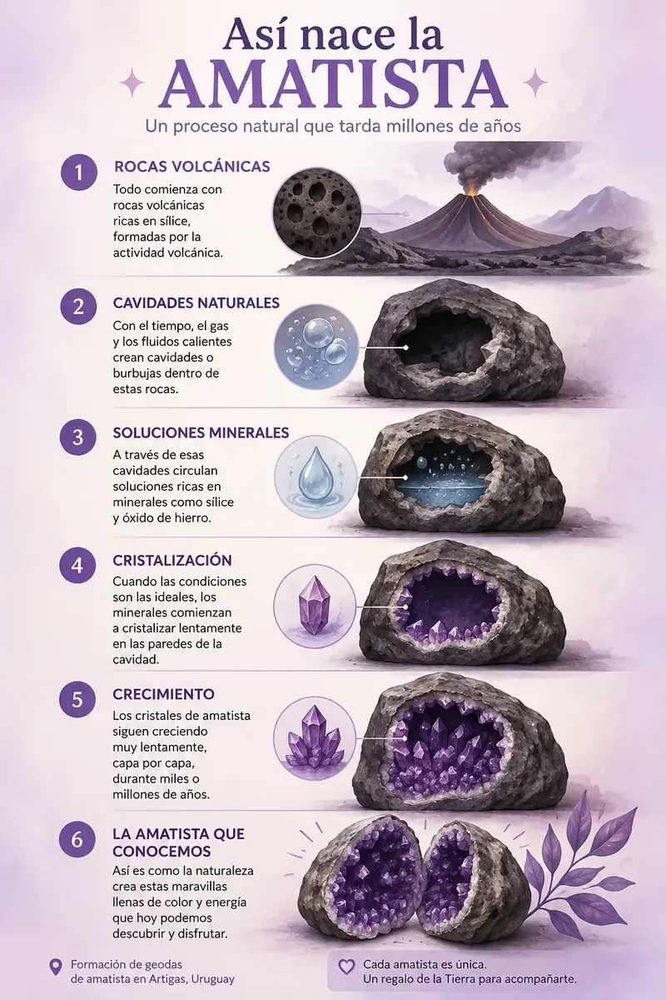
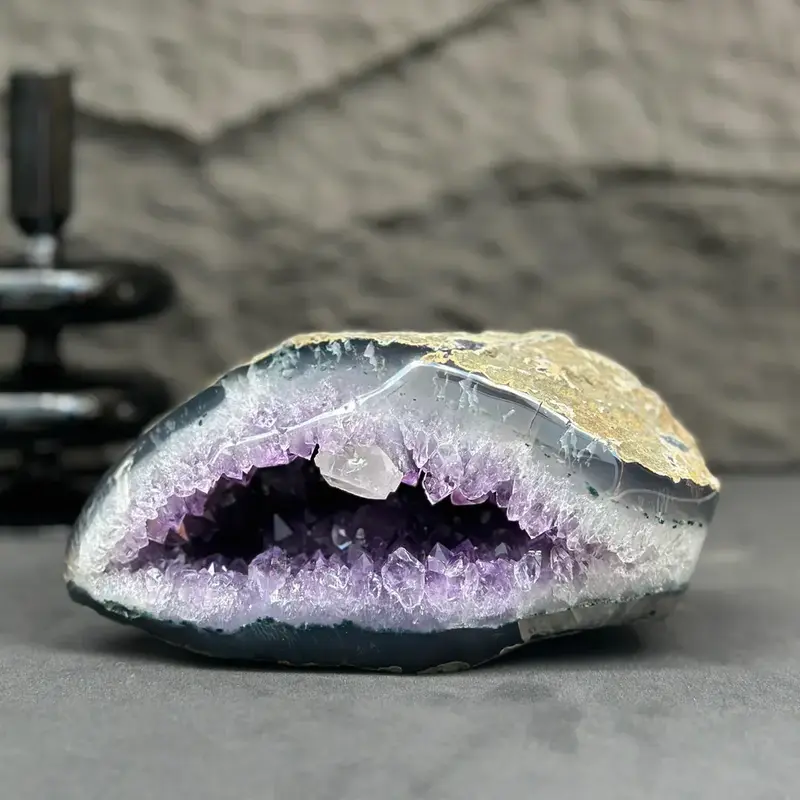

Amatista
Calma · Protección · Conexión interior
Cada piedra puede atraer por su belleza, por su historia, por lo que representa o simplemente porque algo en ella te llama. En distintas tradiciones, la amatista se asocia especialmente con la calma, la protección y la conexión interior. No hay una única forma de conectar con una piedra.

Amatistas pulidas en conjunto de collar y caravanas de Nalomy .
¿Podría ser para ti?
La amatista suele elegirse cuando buscas un símbolo de calma, pausa y conexión interior. También puede atraerte simplemente por su color y su belleza.
En el mundo de los cristales y en distintas tradiciones espirituales, se la relaciona con la introspección, la intuición y los chakras superiores, especialmente el tercer ojo y el chakra corona.

Conjunto de amatista en una joya de Nalomy variante en forma de gota.
¿Cómo puedes usarla?
En joyería: llevarla contigo te permite mantenerla cerca durante el día y disfrutar de su belleza y de su significado simbólico.
En tu espacio: puedes colocarla en un dormitorio, rincón de descanso, meditación o en cualquier lugar que quieras asociar con calma y pausa.
En meditación: puedes sostenerla, colocarla cerca o incorporarla a tu espacio personal.
En tus rituales: puedes incluirla en momentos de limpieza, intención, contemplación o simplemente en ese pequeño ritual que tenga significado para ti.
Conoce la amatista
La amatista es una variedad púrpura del cuarzo, un mineral formado por silicio y oxígeno con fórmula química SiO₂.
Su color puede ir desde lilas suaves hasta violetas profundos y rojizos. Es precisamente esa combinación de color, brillo e historia la que la ha convertido en una de las variedades de cuarzo más apreciadas en joyería y en diferentes tradiciones relacionadas con los cristales.
Dureza: 7 en la escala de Mohs. Es adecuada para joyería, aunque la dureza mide principalmente resistencia al rayado y no significa que sea imposible de golpear, romper o dañar.
¿Cómo cuidar una amatista?
Puedes limpiarla con agua corriente o de lluvia y secarla al aire sobre un paño suave.
Evita golpes fuertes, productos químicos agresivos y cambios bruscos de temperatura.
También conviene evitar una exposición prolongada a una luz solar muy intensa, ya que algunos ejemplares pueden perder intensidad de color con el tiempo.
Si deseas cargarla al sol, con unos 15 minutos sera suficiente.
Si la llevas como joya, guárdala separada de otras piezas que puedan rayarla.

Una piedra con una historia muy nuestra
La amatista tiene un vínculo especialmente fuerte con Uruguay. En nuestro país, sus yacimientos más conocidos se encuentran en el norte, especialmente en el departamento de Artigas.
Documentos de alrededor de 1860 ya mencionaban las llamadas “Piedras Brillantes” de Artigas y el interés que despertaban. Con el tiempo, las ágatas y amatistas de la región llegaron también a mercados internacionales.
En 2014, Artigas fue declarado Capital Nacional de las Piedras Preciosas y Semipreciosas, Amatistas y Ágatas.
Y el 19 de septiembre de 2024, la amatista fue declarada oficialmente Piedra Nacional de la República Oriental del Uruguay.

¿Cómo nació una amatista?
Para entender su historia hay que viajar unos 130 millones de años, al Cretácico. En aquel momento, enormes coladas de lava basáltica cubrieron parte de lo que hoy es el norte de Uruguay.
Al enfriarse la lava, los gases que estaban atrapados en ella dejaron cavidades dentro de la roca volcánica. Muchísimo después, esas cavidades serían el lugar donde comenzarían a crecer los minerales.
Por las rocas circularon fluidos acuosos. Parte de esa agua era agua meteórica, es decir, agua procedente de las precipitaciones que se infiltra en el suelo y pasa a formar parte de las aguas subterráneas.
Al atravesar las rocas, el agua pudo transportar sustancias disueltas. Cuando llegó a las cavidades, las condiciones cambiaron y comenzaron a depositarse minerales como sílice, calcedonia y cuarzo. En determinadas condiciones, terminaron creciendo los cristales de amatista.

¿Por qué es violeta?
La amatista sigue siendo cuarzo, pero durante su formación puede incorporar pequeñas cantidades de hierro en su estructura cristalina.
El hierro por sí solo no explica el color. También interviene la irradiación natural que actúa sobre el cristal durante largos períodos de tiempo y modifica el estado electrónico del hierro incorporado.
Por eso la amatista no es simplemente “cuarzo teñido de violeta”. Su color es el resultado de una historia química y geológica mucho más compleja.
¿Y por qué a veces aparece sobre ágata?
En muchas geodas, antes de que aparezcan los grandes cristales violetas, pueden depositarse capas de ágata o calcedonia, formas de sílice microcristalina. Después pueden crecer cuarzos y, bajo determinadas condiciones, aparecer la amatista.

Millones de años en una piedra
No existe un reloj exacto que podamos ponerle a una geoda. Su formación ocurrió en distintas etapas y durante períodos enormes.
Las rocas volcánicas que contienen las geodas de la región de Artigas se formaron en el Cretácico temprano. Muchísimo después, el agua comenzó a circular por ellas y los minerales fueron creciendo dentro de las cavidades.
Los estudios de Los Catalanes indican que la mineralización fue episódica, extremadamente lenta y pudo desarrollarse durante millones de años.
Cada geoda terminó contando una historia diferente. Y eso es parte de lo que hace especial a una piedra natural: nunca salió de una fábrica siguiendo exactamente la misma receta.
El lado simbólico de la amatista
Durante siglos, su color púrpura y las historias asociadas a ella hicieron de la amatista una piedra vinculada con la contemplación, la espiritualidad y la transformación.
Hoy muchas personas la incorporan a sus espacios de meditación, prácticas personales o rituales como parte de una experiencia que puede ser tan personal como la propia piedra.

¿Por qué elegimos la amatista en Nalomy?
Para nosotras, la amatista tiene algo de serenidad, misterio y conexión con un lugar muy nuestro. Por eso la elegimos como piedra central de la Mystic Box Serenidad.
Pero esta elección no es una regla. No tienes que elegir una piedra porque alguien diga que “es para ti”. Puedes elegirla porque te gusta, porque conecta con lo que quieres expresar o simplemente porque fue la que te llamó.
No creemos que una piedra tenga que hacer el trabajo por ti. Nos gusta pensarla como un pequeño recordatorio de aquello que quieres cuidar o cultivar en ese momento.
Cada amatista es única. Como cada persona que la elige.

Fuentes y referencias
Para elaborar esta guía consultamos fuentes gemológicas, científicas y organismos oficiales de Uruguay.
- Gemological Institute of America (GIA). Información sobre amatista, cuarzo, dureza, color y características gemológicas. Ver fuente
- Mineralium Deposita — Springer Nature. Investigación sobre las geodas de amatista de Los Catalanes, su formación, mineralización, fluidos y temperaturas. Ver estudio
- Presidencia de la República Oriental del Uruguay. Ley N.º 20.343, de 19 de septiembre de 2024, que declara a la amatista Piedra Nacional del Uruguay. Ver ley
- Ministerio de Industria, Energía y Minería — Uruguay. Información sobre los yacimientos de amatista de Artigas, Los Catalanes y su patrimonio geológico. Ver fuente
- Unión Internacional de Ciencias Geológicas. Información sobre el distrito de amatistas de Los Catalanes y su reconocimiento como sitio de patrimonio geológico. Ver fuente
¿Te atrajo la amatista?
La elegimos como piedra central de nuestra Mystic Box Serenidad, creada para acompañarte en tus momentos de calma y conexión.
Descubrir Mystic Box Serenidad